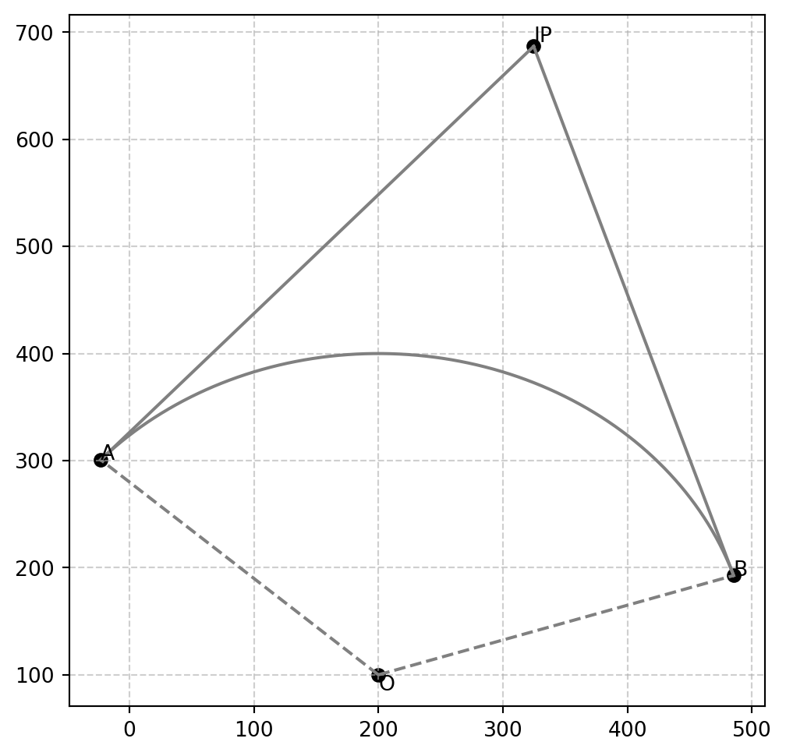

Code
import numpy as np
import matplotlib.pyplot as plt
def draw_circle_with_two_tangent(x0, y0, r, ax, theta_start=0, theta_end=2 * np.pi, notations=('O', 'A', 'B', 'IP')):
# Generate circle points
theta = np.linspace(theta_start, theta_end, 720)
x_circle = x0 + r * np.cos(theta)
y_circle = y0 + r * np.sin(theta)
# plot
ax.plot(x_circle, y_circle, "gray", label="Circle (r={radius})")
ax.plot([x0, x_circle[0]], [y0, y_circle[0]], "gray", linestyle="--")
ax.plot([x0, x_circle[-1]], [y0, y_circle[-1]], "gray", linestyle="--")
ax.text(x0, y0, notations[0], verticalalignment="top", horizontalalignment="left")
ax.scatter(x0, y0, color="k")
# add text
ax.text(x_circle[-1], y_circle[-1], notations[1], label="Circle (r={radius})")
ax.scatter(x_circle[-1], y_circle[-1], color="k")
ax.text(x_circle[0], y_circle[0], notations[2], label="Circle (r={radius})")
ax.scatter(x_circle[0], y_circle[0], color="k")
# plot external intersection points
mid_theta = (theta_start + theta_end) / 2
diff_theta = (theta_end - theta_start) / 2
external_x = np.cos(mid_theta) * abs(r / np.cos(diff_theta)) + x0
external_y = np.sin(mid_theta) * abs(r / np.cos(diff_theta)) + y0
ax.scatter(external_x, external_y, color="k")
ax.text(external_x, external_y, notations[3], verticalalignment="bottom", horizontalalignment="left")
ax.plot(
[external_x, x_circle[0]], [external_y, y_circle[0]], "gray", linestyle="-"
)
ax.plot(
[external_x, x_circle[-1]], [external_y, y_circle[-1]], "gray", linestyle="-"
)
return {'A': (x_circle[-1], y_circle[-1]), 'B': (x_circle[0], y_circle[0]), 'IP': (external_x, external_y )}
# params
x0, y0, r0 = 200, 100, 300
theta_start = np.pi / 10
theta_end = np.pi / 10 + np.pi * 2/ 3
fig, ax = plt.subplots(figsize=(6, 6))
coordinates = draw_circle_with_two_tangent(x0, y0, r0, ax, theta_start, theta_end)
ax.grid(True, linestyle="--", alpha=0.6)